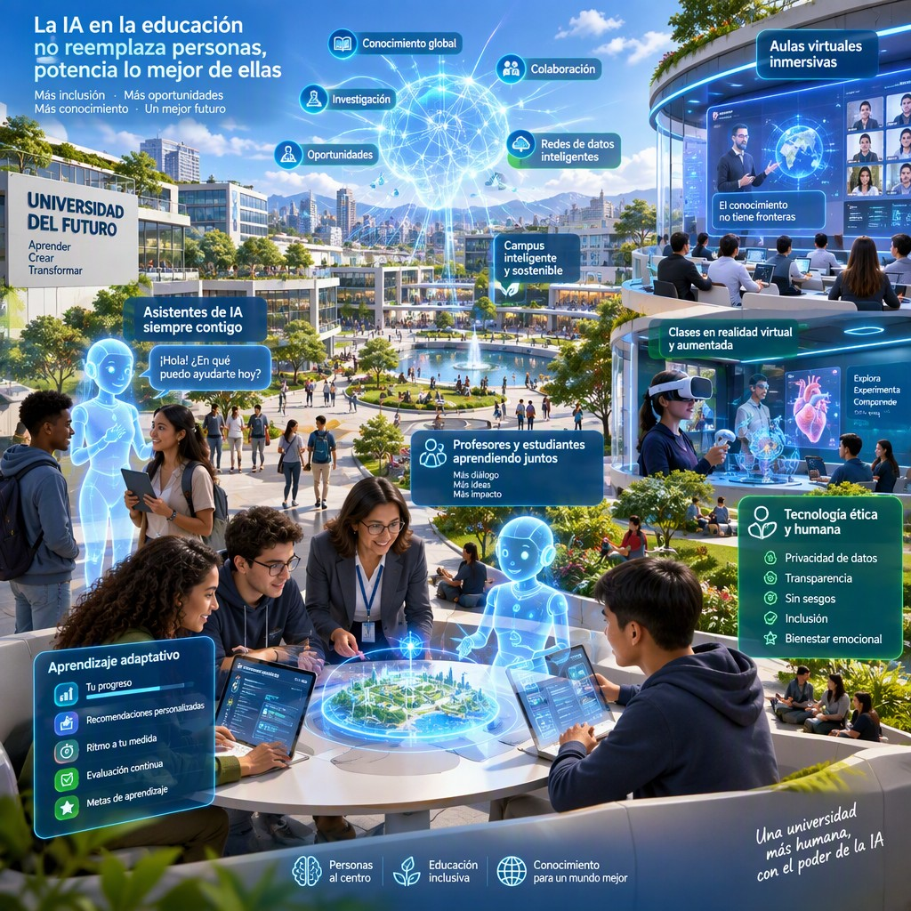
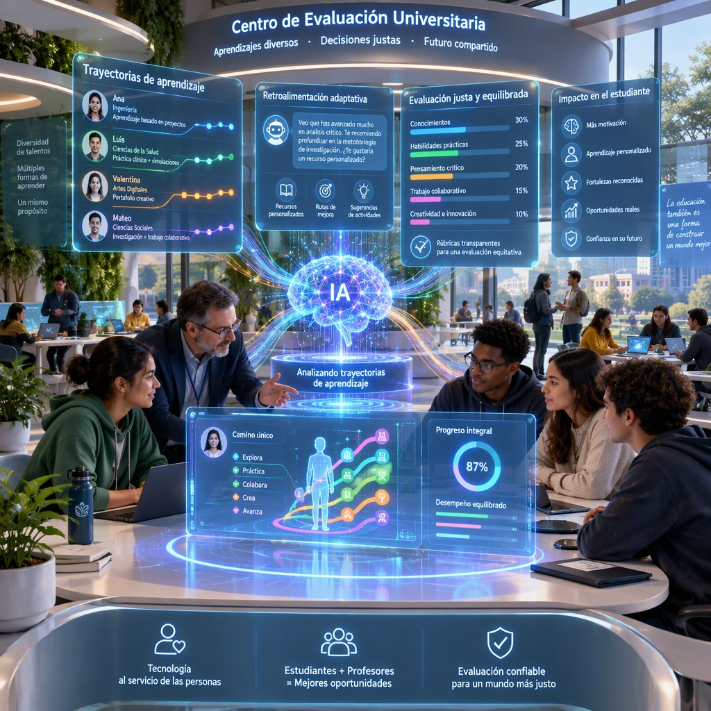
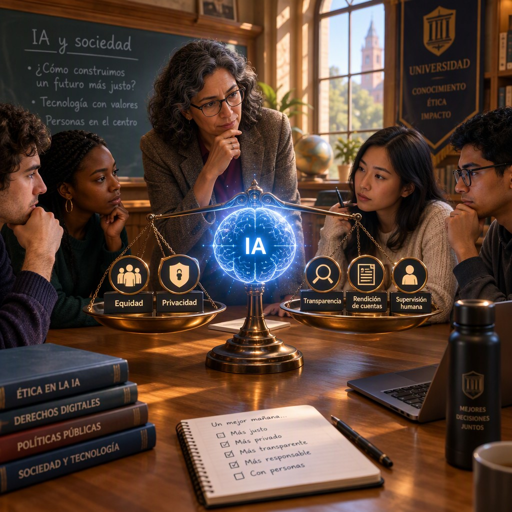
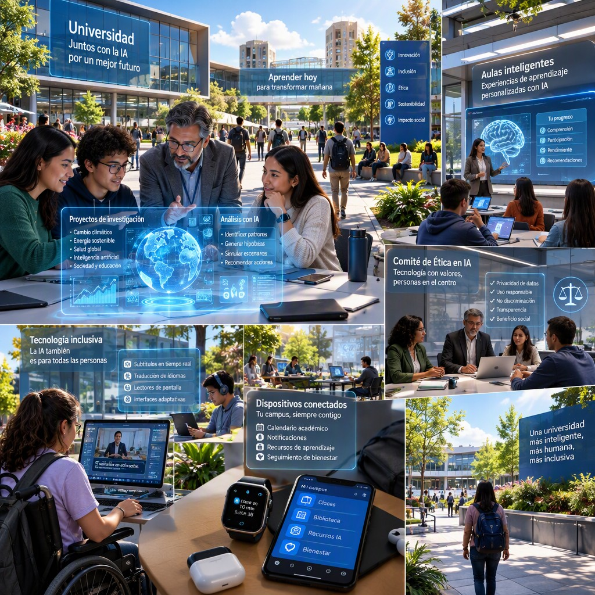

La IA en educación superior
Subtítulo (opcional)2026
Título de la obra:
La IA en educación superior
Autores:
Julieth Andrea Gómez Hernández
Wilfer León Arias Loaiza
Código JavaScript para el libro: Joel Espinosa Longi, IMATE, UNAM.
Recursos interactivos: DescartesJS, WebSim, Phet Colorado, GeoGebra, ...
Fuentes: Lato y UbuntuMono
Imagen de portada: ilustración generada por Ideogram AI
Red Educativa Digital Descartes
Córdoba (España)
descartes@proyectodescartes.org
https://proyectodescartes.org
Proyecto iCartesiLibri
https://proyectodescartes.org/iCartesiLibri/index.htm
ISBN:

Esta obra está bajo una licencia Creative Commons 4.0 internacional: Reconocimiento-No Comercial-Compartir Igual.
Tabla de contenido
Prefacio
Este libro nace con el propósito de ofrecer una mirada articulada sobre la presencia de la inteligencia artificial en la educación superior. Su punto de partida es reconocer que la IA ya interviene en tareas como el análisis de datos, la generación de contenidos, la personalización de recursos, la retroalimentación y el apoyo a la investigación. Sin embargo, la obra no la presenta como una solución automática ni como un reemplazo de la enseñanza, el aprendizaje o la responsabilidad universitaria. La propone, más bien, como una herramienta cuyo valor depende de los objetivos pedagógicos, la supervisión humana, la verificación de los resultados y la reflexión sobre sus efectos.
El enfoque combina la comprensión de los sistemas de IA con su uso educativo concreto. A lo largo del libro se consideran sus componentes —datos, modelos algorítmicos, interfaces y mecanismos de supervisión—, así como el carácter probabilístico de las respuestas generativas, que pueden parecer coherentes sin ser necesariamente verdaderas o pertinentes. Esta perspectiva invita a examinar tanto las oportunidades como las limitaciones: la rapidez para producir materiales, la adaptación a distintos ritmos, el apoyo inmediato y la reducción de tareas repetitivas conviven con errores, sesgos, riesgos para la privacidad, desigualdades de acceso, dependencia tecnológica y dificultades relacionadas con la autoría y la integridad académica.
La organización de la obra sigue un recorrido que va desde el panorama general de la IA educativa hacia sus principales ámbitos de aplicación. El lector encontrará reflexiones sobre su presencia en la enseñanza y el aprendizaje, propuestas para diseñar estrategias didácticas y aproximaciones a formas de evaluación que atiendan no solo al producto final, sino también al razonamiento, el proceso, la argumentación y la producción propia. El itinerario se amplía después hacia la
investigación, la ética, la responsabilidad, la protección de datos y la seguridad, para desembocar en las condiciones necesarias para implementar estas tecnologías en el campus y pensar el futuro de la universidad como un ecosistema sociotécnico.
Una idea recorre estas páginas: utilizar la IA de manera educativa exige hacer visibles sus procesos y sus límites. Por ello, se concede importancia a contrastar las respuestas con fuentes académicas, declarar el uso de herramientas, proteger la información sensible, establecer normas institucionales y conservar la decisión final bajo responsabilidad de docentes e investigadores. El libro también subraya la necesidad de formar a estudiantes y profesores para que puedan cuestionar, revisar y corregir las producciones algorítmicas. La innovación, en este marco, no se mide por la cantidad de tecnología incorporada, sino por su capacidad para ampliar la participación, la retroalimentación y el acceso sin desplazar el juicio académico ni la dimensión humana de la educación superior.
Conviene señalar con transparencia que tanto los textos como las imágenes de esta obra fueron generados con ayuda de inteligencia artificial. Esta circunstancia forma parte del propio tema del libro y se asume desde una perspectiva crítica y responsable: los materiales requieren revisión, contextualización y valoración humana. Invitamos al lector a recorrer las páginas siguientes no como un catálogo de respuestas definitivas, sino como un espacio para comprender posibilidades, reconocer riesgos y participar en la construcción de prácticas universitarias más claras, seguras, equitativas y pedagógicamente fundamentadas.
La IA en educación superior
Panorama de la IA Educativa

La IA educativa comprende el conjunto de técnicas y sistemas computacionales capaces de analizar datos, reconocer patrones, generar contenidos, ofrecer recomendaciones o interactuar con estudiantes y docentes en contextos de enseñanza y aprendizaje. En la educación superior, su panorama actual incluye tanto herramientas tradicionales —como sistemas de tutoría inteligente, analítica del aprendizaje y evaluación automatizada— como modelos generativos capaces de producir texto, imágenes, código y retroalimentación. La revisión de Crompton y Burke (2023) muestra que estas tecnologías se aplican en áreas como la personalización del aprendizaje, la predicción del desempeño, la administración académica y el apoyo a la investigación.
Sus componentes principales son los datos educativos, los algoritmos de aprendizaje automático, los modelos de lenguaje, las interfaces de interacción y los mecanismos de supervisión humana. En términos generales, el sistema recibe información —por ejemplo, respuestas, consultas, tiempos de dedicación o producciones escritas—, identifica regularidades y genera una salida: una recomendación, una explicación, una alerta o un contenido. En los modelos generativos, el proceso se basa en estimar qué elementos son más probables dentro de una secuencia, por lo que la respuesta puede parecer coherente sin constituir necesariamente conocimiento verdadero o comprensión humana. Kasneci et al. (2023) señalan que esta capacidad abre oportunidades para la tutoría, la generación de materiales y la asistencia a la escritura, pero exige comprobar la exactitud, pertinencia y finalidad pedagógica de cada resultado.
Entre sus aplicaciones prácticas y beneficios, la IA puede apoyar la creación de cuestionarios diferenciados, la traducción y adaptación de materiales, la retroalimentación formativa, la identificación temprana de estudiantes que requieren apoyo y la simulación de conversaciones para practicar idiomas o resolver problemas. También puede reducir tareas repetitivas y permitir que el profesorado dedique más tiempo a la orientación, el debate y el acompañamiento. Por ejemplo, un docente universitario puede utilizar un modelo generativo para proponer varias versiones de un caso, solicitar preguntas de distinto nivel cognitivo y después revisar críticamente las respuestas antes de incorporarlas a su curso. Lo (2023) destaca que estas posibilidades deben integrarse en diseños didácticos que mantengan objetivos de aprendizaje claros, en lugar de utilizar la herramienta como sustituto de la enseñanza.
El panorama también está marcado por desafíos y limitaciones: sesgos presentes en los datos, respuestas imprecisas o inventadas, riesgos para la privacidad, dependencia tecnológica, desigualdad de
acceso y dificultades para determinar la autoría de los trabajos estudiantiles. Además, la automatización de la evaluación puede afectar la transparencia y la confianza si los criterios no son comprensibles para quienes aprenden. El análisis de Tlili et al. (2023) sobre ChatGPT muestra que una adopción responsable requiere alfabetización en IA, protección de datos, revisión docente y normas institucionales sobre uso permitido. Por ello, el principio orientador no debe ser “automatizar por automatizar”, sino combinar las capacidades de la tecnología con el juicio académico, la interacción humana y una evaluación crítica de sus efectos educativos.
La IA en el proceso de enseñanza
La inteligencia artificial (IA) en el proceso de enseñanza comprende el uso de sistemas capaces de analizar información, reconocer patrones y generar respuestas para apoyar la planificación docente, la interacción con el alumnado y la evaluación. En la educación superior, su funcionamiento suele combinar modelos de aprendizaje automático, procesamiento del lenguaje natural, bases de datos académicas e interfaces conversacionales. Los modelos generativos, como los asistentes basados en lenguaje, producen explicaciones, ejemplos, preguntas y retroalimentación a partir de instrucciones escritas; sin embargo, sus respuestas deben ser revisadas porque pueden contener errores, sesgos o referencias inexistentes (Kasneci et al., 2023).
Sus componentes principales incluyen: a) datos de entrada, como preguntas, trabajos o resultados de aprendizaje; b) un modelo algorítmico que procesa esos datos; c) una interfaz de interacción, por ejemplo, un chatbot o sistema tutorial; y d) mecanismos de supervisión docente. El principio de funcionamiento consiste en relacionar la información proporcionada por el usuario con patrones aprendidos durante el entrenamiento del sistema. En un proceso educativo, la IA puede analizar una respuesta, identificar dificultades frecuentes y generar una explicación adaptada al nivel del estudiante. No obstante, esta personalización no sustituye el juicio pedagógico: el profesorado debe definir los objetivos, comprobar la calidad de los contenidos y decidir cuándo una recomendación es pertinente (Tlili et al., 2023).
Entre sus aplicaciones prácticas se encuentran la elaboración de materiales didácticos, la generación de bancos de preguntas, la simulación de debates, la traducción y adaptación de textos, la tutoría conversacional y la retroalimentación formativa. Por ejemplo, en una asignatura universitaria, un docente puede solicitar a un sistema de IA que proponga tres casos profesionales sobre un tema, diseñe preguntas de distintos niveles cognitivos y ofrezca una rúbrica preliminar; posteriormente, el docente revisa, contextualiza y ajusta esos materiales. También puede utilizarse para que el estudiante practique mediante preguntas socráticas, siempre que la actividad exija justificar las respuestas y contrastarlas con bibliografía académica. Estas posibilidades favorecen la interacción y amplían las oportunidades de práctica, pero su eficacia depende del diseño de la actividad y de la mediación pedagógica (Kasneci et al., 2023).
Los beneficios y ventajas de la IA incluyen la rapidez para producir recursos, la posibilidad de ofrecer apoyo inmediato y la adaptación de explicaciones a diferentes ritmos de aprendizaje.
Aun así, existen desafíos o limitaciones relacionados con la privacidad de los datos, la brecha de acceso, los sesgos algorítmicos, la dependencia tecnológica, la integridad académica y la falta de transparencia sobre la procedencia de algunas respuestas. Por ello, la institución debe establecer normas de uso, formar a docentes y estudiantes en alfabetización digital y promover una evaluación centrada en el razonamiento, el proceso y la producción propia. La UNESCO (2023) recomienda adoptar un enfoque humano, seguro, equitativo y basado en la protección de datos; en consecuencia, la IA debe entenderse como una herramienta complementaria que fortalece la enseñanza, no como un reemplazo de la relación educativa ni de la responsabilidad profesional del docente.
La IA en el proceso de aprendizaje
La IA en el proceso de aprendizaje comprende el uso de sistemas capaces de analizar información, generar respuestas, reconocer patrones y adaptar recursos educativos a las necesidades de cada estudiante. En la educación superior, suele funcionar mediante modelos de aprendizaje automático y, más recientemente, modelos generativos que procesan grandes volúmenes de datos para producir explicaciones, preguntas, resúmenes, ejemplos o retroalimentación. Crompton y Burke (2023) señalan que sus aplicaciones universitarias abarcan la personalización del aprendizaje, la evaluación, los sistemas tutoriales inteligentes y el apoyo a la gestión académica. Sus componentes principales son: datos de aprendizaje, algoritmos o modelos de IA, interfaces de interacción —como chatbots o asistentes virtuales— y mecanismos de supervisión docente.
El principio de funcionamiento consiste en relacionar la información proporcionada por el estudiante con patrones aprendidos previamente. Por ejemplo, una plataforma puede analizar respuestas incorrectas, tiempo de dedicación y nivel de dificultad para recomendar
una actividad de refuerzo. En el caso de la IA generativa, el sistema interpreta una instrucción escrita y produce una respuesta probabilística basada en los patrones del lenguaje presentes en sus datos de entrenamiento. Este proceso permite ofrecer explicaciones alternativas, simulaciones, ejercicios graduados y tutoría disponible en
cualquier momento. Kasneci et al. (2023) destacan que estas herramientas pueden ampliar las oportunidades de aprendizaje, siempre que se utilicen como apoyo al razonamiento y no como sustituto de la participación intelectual del estudiante.
Entre sus aplicaciones prácticas y beneficios se encuentran la creación de cuestionarios personalizados, la traducción y simplificación de textos académicos, la retroalimentación inicial sobre borradores, la simulación de entrevistas o debates y el acompañamiento en cursos masivos. Un estudiante de ingeniería, por ejemplo, puede solicitar varias explicaciones de un concepto, resolver un problema paso a paso y comparar sus resultados con una solución orientativa. Asimismo, un asistente conversacional puede favorecer el aprendizaje autónomo al proporcionar respuestas inmediatas y adaptar el nivel de complejidad. Sin embargo, Tlili et al. (2023) advierten que la utilidad educativa de los chatbots depende del diseño de las actividades, de la calidad de las instrucciones y de la mediación del profesorado; una respuesta fluida no garantiza que sea correcta, pertinente ni pedagógicamente adecuada.
También existen desafíos y limitaciones importantes: las respuestas pueden contener errores o información inventada, reproducir sesgos, vulnerar la privacidad o fomentar una dependencia que reduzca la autorregulación y el pensamiento crítico. Por esta razón, el estudiante debe contrastar las respuestas con bibliografía académica, justificar sus decisiones y declarar cuándo empleó una herramienta de IA. La evaluación universitaria necesita centrarse cada vez más en procesos observables —argumentación, aplicación, reflexión y producción original— en lugar de limitarse al producto final. UNESCO (2023) recomienda establecer normas institucionales sobre protección de datos, transparencia, inclusión y supervisión humana. En consecuencia, la IA debe integrarse mediante un enfoque de colaboración entre estudiante, docente y tecnología, con objetivos de
aprendizaje explícitos, verificación de resultados y responsabilidad ética.
Estrategias didácticas

La IA generativa en la educación superior comprende sistemas capaces de producir texto, imágenes, código, retroalimentación u otros recursos a partir de instrucciones del usuario.
Su funcionamiento se basa en modelos entrenados con grandes volúmenes de datos que identifican patrones y generan respuestas probabilísticas; por ello, no “comprenden” necesariamente la información como lo hace una persona y pueden producir respuestas incorrectas o sesgadas. Kasneci et al. (2023) destacan que estas herramientas pueden apoyar la personalización del aprendizaje, la tutoría y la producción de materiales, aunque requieren supervisión docente y evaluación crítica. En este marco, una estrategia didáctica eficaz debe integrar cinco componentes: objetivos de aprendizaje, actividad mediada por IA, interacción docente-estudiante, verificación de resultados y evaluación del proceso.
El principio de funcionamiento didáctico consiste en utilizar la IA como mediadora del razonamiento, no como sustituta de la actividad intelectual.
El docente puede diseñar secuencias en las que el estudiante formule una pregunta, compare la respuesta generada con fuentes académicas, detecte errores, argumente sus decisiones y revise el producto final. Una aplicación concreta es solicitar a un sistema generativo tres explicaciones diferentes de un concepto, identificar sus coincidencias y contradicciones, y elaborar después una síntesis fundamentada. Lo (2023) señala que este tipo de herramientas ofrece oportunidades para la retroalimentación inmediata y el aprendizaje personalizado, pero también plantea riesgos relacionados con la exactitud, la dependencia tecnológica y la integridad académica. Por ello, conviene establecer instrucciones explícitas sobre cuándo, cómo y para qué puede emplearse la IA.
Entre las estrategias didácticas más pertinentes se encuentran las siguientes:
- Tutoría socrática: pedir a la IA que formule preguntas graduales, sin entregar directamente la solución.
- Aprendizaje basado en problemas: utilizar respuestas generadas como hipótesis iniciales que deben ser verificadas mediante bibliografía especializada.
- Escritura iterativa: comparar un borrador humano con una propuesta de la IA y justificar qué cambios se aceptan o rechazan.
- Simulación profesional: emplear la IA para representar pacientes, clientes, usuarios o interlocutores en disciplinas como medicina, derecho, educación o administración.
- Evaluación formativa: generar ejercicios diferenciados y retroalimentación preliminar, siempre revisada por el docente.
- Alfabetización crítica: analizar sesgos, privacidad, autoría, propiedad intelectual y límites de los datos utilizados.
Estas estrategias permiten aprovechar beneficios como la personalización, la disponibilidad permanente de apoyo y la diversificación de recursos; sin embargo, los procesos internos y resultados deben ser transparentes. Tlili et al. (2023) advierten que la IA generativa puede facilitar respuestas plausibles pero falsas, reproducir sesgos y modificar las prácticas de evaluación. En consecuencia, el profesorado debe solicitar declaraciones de uso de IA, exigir fuentes verificables, valorar los borradores y las explicaciones del estudiante, e incorporar defensas orales, diarios de aprendizaje o actividades realizadas en clase.
La orientación de UNESCO (2023) complementa esta perspectiva al recomendar un uso humano, seguro, equitativo y pedagógicamente fundamentado. Así, la estrategia no consiste en prohibir ni aceptar sin límites la herramienta, sino en diseñar experiencias donde la tecnología amplíe la participación y la retroalimentación sin desplazar el juicio académico.
Evaluación Inteligente

La evaluación inteligente es un enfoque que integra inteligencia artificial, analítica de aprendizaje y criterios pedagógicos para recopilar evidencias del progreso estudiantil, interpretarlas y ofrecer retroalimentación oportuna. A diferencia de la evaluación automatizada tradicional, no se limita a asignar una calificación: busca identificar patrones de comprensión, errores recurrentes, niveles de participación y necesidades específicas. Sus componentes principales son los instrumentos de evaluación, los datos de desempeño, los algoritmos de análisis, los sistemas de retroalimentación y la supervisión docente. En este marco, los modelos generativos pueden apoyar la creación de preguntas, rúbricas y comentarios personalizados, aunque su uso debe orientarse al aprendizaje y no únicamente a la producción automática de respuestas (Kasneci et al., 2023; Lo, 2023).
El principio de funcionamiento consiste en comparar las evidencias producidas por el estudiante —respuestas escritas, proyectos, cuestionarios, debates o actividades prácticas— con criterios previamente definidos. El sistema puede detectar conceptos deficientemente comprendidos, recomendar recursos y sugerir actividades de refuerzo. Entre sus procesos internos se encuentran la captura de datos, su clasificación, el análisis mediante modelos estadísticos o de lenguaje, la generación de retroalimentación y la revisión por parte del docente. Un flujo adecuado puede organizarse así:
- definir resultados de aprendizaje y criterios transparentes;
- diseñar tareas auténticas y rúbricas;
- analizar las respuestas sin reducirlas exclusivamente a indicadores numéricos;
- generar retroalimentación explicativa;
- permitir la revisión y decisión final del profesor.
En las aplicaciones prácticas, la IA puede utilizarse para elaborar bancos de preguntas adaptativas, ofrecer tutorías automatizadas, revisar borradores, detectar dificultades conceptuales y apoyar la evaluación de grandes grupos. También puede ayudar al profesor a comparar respuestas, identificar estudiantes que requieren acompañamiento y diseñar actividades diferenciadas. Un caso especialmente relevante es el uso de ChatGPT como herramienta de apoyo educativo: la literatura señala que puede estimular la explicación, la revisión y el diálogo socrático, pero también producir respuestas incorrectas, sesgadas o excesivamente generales (Tlili et al., 2023).
Una actividad universitaria podría pedir al estudiante que analice una respuesta generada por IA, verifique sus fuentes, identifique errores y la mejore mediante argumentos propios.
Entre sus beneficios y ventajas destacan la rapidez de la retroalimentación, la posibilidad de personalizar el aprendizaje, la reducción de tareas repetitivas y la disponibilidad de apoyos formativos fuera del horario de clase. Sin embargo, sus desafíos y limitaciones incluyen la privacidad de los datos, los sesgos algorítmicos, la falta de explicabilidad, la dependencia tecnológica y la dificultad para valorar competencias complejas como la creatividad, la ética o el razonamiento profundo. Además, la detección automática de textos generados por IA no debe considerarse una prueba definitiva de fraude. La evaluación inteligente debe, por tanto, combinar evidencias diversas, defensa oral, revisión de procesos, proyectos contextualizados y juicio profesional docente. Como criterio esencial, la IA puede recomendar, comparar y retroalimentar, pero la responsabilidad de interpretar el aprendizaje y tomar decisiones académicas debe permanecer bajo supervisión humana (Kasneci et al., 2023; Lo, 2023).
Investigación Potenciada
La investigación potenciada por inteligencia artificial se refiere al uso de sistemas capaces de analizar lenguaje, recuperar información, resumir documentos, generar códigos y apoyar la interpretación de datos a lo largo del ciclo investigativo. En educación superior, su principio de funcionamiento combina modelos de lenguaje de gran escala, bases de datos académicas y herramientas de análisis para producir resultados preliminares a partir de instrucciones humanas.
Kasneci et al. (2023) señalan que estos modelos pueden apoyar la formulación de preguntas, la explicación de conceptos complejos y la asistencia en tareas de escritura, aunque sus respuestas deben considerarse propuestas revisables y no evidencia científica definitiva.
Sus componentes principales suelen incluir: (1) un asistente conversacional para delimitar problemas y generar hipótesis; (2) sistemas de búsqueda semántica y recuperación aumentada con fuentes documentales; (3) gestores bibliográficos para organizar referencias;
(4) herramientas de análisis estadístico, cualitativo o de programación; y (5) mecanismos de revisión humana para verificar exactitud, sesgos y procedencia. El proceso interno puede describirse como una secuencia de cinco etapas: definir el objetivo, proporcionar datos o instrucciones, generar una respuesta, contrastarla con fuentes verificables y documentar las decisiones metodológicas. Tlili et al. (2023) advierten que los chatbots pueden producir respuestas plausibles pero incorrectas, por lo que la validación de citas, datos y argumentos debe permanecer bajo responsabilidad del investigador.
Entre sus aplicaciones prácticas, la IA puede ayudar a construir ecuaciones de búsqueda, clasificar grandes colecciones de artículos, identificar temas recurrentes en entrevistas, traducir textos académicos, detectar inconsistencias en bases de datos y generar borradores de código reproducible. Por ejemplo, un equipo universitario podría emplear un modelo para proponer palabras clave sobre abandono estudiantil, organizar los artículos recuperados por temas y sugerir un esquema de revisión; posteriormente, los investigadores tendrían que comprobar cada referencia, aplicar criterios de inclusión y justificar el método utilizado. Entre sus beneficios destacan el ahorro de tiempo, la exploración rápida de alternativas y el acceso más sencillo a técnicas analíticas. Sin embargo, la herramienta no sustituye la interpretación teórica ni la toma de decisiones metodológicas: su valor depende de la calidad de los datos, de las instrucciones y de la supervisión experta (Kasneci et al., 2023).
Los principales desafíos y limitaciones son las alucinaciones —información inventada o imprecisa—, los sesgos presentes en los datos de entrenamiento, la exposición de información sensible, la opacidad de algunos modelos y la dificultad para atribuir correctamente la autoría. Además, utilizar IA para redactar o analizar datos sin declararlo puede afectar la integridad académica y la reproducibilidad. La UNESCO (2023) recomienda establecer políticas institucionales
sobre privacidad, transparencia, alfabetización en IA y supervisión humana. Por ello, una práctica responsable debe conservar un registro de las herramientas empleadas, las instrucciones relevantes, las versiones de los resultados y las modificaciones realizadas por el equipo investigador; así, la IA funciona como instrumento de apoyo, mientras que la responsabilidad epistemológica y ética continúa perteneciendo a las personas.
Ética y Responsabilidad

La ética y responsabilidad en la IA aplicada a la educación superior se refieren al conjunto de principios, normas y prácticas que orientan el diseño, la adopción y la supervisión de sistemas capaces de generar textos, analizar datos, recomendar recursos o apoyar la evaluación. Su funcionamiento combina grandes volúmenes de datos, modelos algorítmicos y decisiones humanas; por ello, la responsabilidad no recae únicamente en la herramienta, sino también en las universidades, el profesorado, el estudiantado y los proveedores tecnológicos. Kasneci et al. (2023) señalan que los modelos de lenguaje pueden favorecer la personalización y la retroalimentación, pero también producir información incorrecta, sesgada o difícil de verificar. Desde esta perspectiva, los componentes principales de una política ética incluyen transparencia, protección de datos, equidad, supervisión humana, seguridad, accesibilidad y responsabilidad institucional.
El principio de funcionamiento ético exige que la IA se utilice como apoyo y no como sustituto automático del juicio académico. En sus procesos internos, un sistema puede recopilar instrucciones, procesar datos, generar una respuesta y ofrecer una recomendación; sin embargo, cada etapa puede introducir riesgos: uso indebido de información personal, reproducción de sesgos presentes en los datos, errores no detectados o decisiones opacas. Por esta razón, la persona docente debe revisar los resultados, explicar sus límites y permitir que el estudiante cuestione o corrija la respuesta. Tlili et al. (2023), al analizar ChatGPT como caso de estudio educativo, destacan la necesidad de combinar innovación con alfabetización digital, evaluación crítica y normas claras de uso. En la práctica, esto implica informar cuándo se empleó IA, verificar las fuentes generadas y evitar que una herramienta determine por sí sola calificaciones, admisiones o sanciones.
Entre sus aplicaciones prácticas, la IA puede apoyar la tutoría personalizada, la elaboración de borradores, la traducción, la accesibilidad para estudiantes con discapacidades, la identificación temprana de dificultades de aprendizaje y la generación de ejercicios diferenciados. Sus beneficios y ventajas incluyen respuestas rápidas, disponibilidad permanente y apoyo a tareas repetitivas, lo que puede liberar tiempo para actividades de mayor valor pedagógico (Kasneci et al., 2023). No obstante, las universidades deben establecer protocolos concretos: (1) declarar qué usos están permitidos; (2) proteger los datos sensibles; (3) exigir revisión humana; (4) enseñar citación y reconocimiento de la asistencia algorítmica; y (5) ofrecer alternativas cuando un estudiante no pueda o no deba utilizar la herramienta. La UNESCO (2023) recomienda que las instituciones adopten un enfoque centrado en las personas, con formación docente, evaluación de riesgos y salvaguardas para la privacidad.
Los principales desafíos o limitaciones son la desigualdad de acceso, la dependencia tecnológica, la pérdida de habilidades de escritura y razonamiento, la fabricación de referencias y el debilitamiento de la integridad académica. Cotton et al. (2023) advierten que la utilización de generadores de texto obliga a replantear las formas tradicionales de evaluación, pues un producto aparentemente original puede no reflejar el aprendizaje del estudiante. Un caso representativo es el uso de ChatGPT para redactar un ensayo: éticamente, no basta con prohibirlo o aceptarlo sin condiciones; es preferible solicitar declaración de uso, versiones sucesivas, reflexión personal, defensa oral o actividades aplicadas que permitan comprobar la comprensión. Así, la responsabilidad se concreta en diseñar evaluaciones auténticas, preservar la autonomía del estudiante y garantizar que toda decisión relevante pueda ser explicada, revisada y apelada.
Datos, Privacidad y Seguridad
La privacidad y la seguridad en la inteligencia artificial (IA) educativa comprenden el conjunto de principios, procedimientos y controles destinados a proteger los datos de estudiantes, docentes y personal administrativo durante todo el ciclo de vida de un sistema inteligente. En la educación superior, estos datos pueden incluir expedientes académicos, patrones de asistencia, respuestas en plataformas virtuales, datos biométricos, información socioeconómica y conversaciones con asistentes generativos. La IA procesa estos datos mediante técnicas como el aprendizaje automático, la clasificación, la predicción y el análisis de lenguaje natural para personalizar la enseñanza, detectar riesgos académicos o automatizar servicios institucionales (Crompton & Burke, 2023). Por ello, la privacidad no debe limitarse al momento de recopilar información, sino abarcar también su almacenamiento, uso, intercambio, conservación y eliminación.
Los componentes principales de una estrategia institucional de protección son:
- Gobernanza de datos: definición de responsables, finalidades, periodos de conservación y criterios para compartir información.
- Minimización y consentimiento: recopilación únicamente de los datos necesarios, con información clara sobre su finalidad y posibles usos.
- Seguridad técnica: cifrado, autenticación multifactor, control de accesos, copias de seguridad, registros de actividad y actualización de sistemas.
- Transparencia algorítmica: explicación comprensible de qué datos utiliza el sistema, cómo produce sus resultados y cuáles son sus limitaciones.
- Supervisión humana: revisión de decisiones automatizadas que puedan afectar calificaciones, admisiones, becas o permanencia estudiantil.
El principio de funcionamiento seguro consiste en transformar una gestión reactiva en un proceso continuo de evaluación y control. Antes de implementar una herramienta, la institución debería identificar qué datos ingresan, quién puede acceder a ellos, dónde se procesan y qué riesgos existen. Durante el uso, debe vigilarse la exactitud de los resultados, la presencia de sesgos, las filtraciones y los usos no autorizados. Después, conviene auditar el sistema, retirar datos innecesarios y revisar los contratos con proveedores externos. En el caso de modelos generativos, no es recomendable introducir expedientes, trabajos inéditos, información médica o datos personales identificables en servicios públicos sin garantías contractuales y técnicas suficientes; esta precaución responde a los riesgos de reutilización, exposición o transferencia internacional de la información (Tlili et al., 2023).
Las orientaciones internacionales también recomiendan políticas institucionales, alfabetización en IA y evaluación de impacto antes de utilizar estas herramientas con fines educativos (UNESCO, 2023).
Las aplicaciones prácticas incluyen sistemas de alerta temprana para identificar estudiantes que podrían requerir apoyo, asistentes virtuales para resolver preguntas frecuentes, análisis de trayectorias académicas, corrección automatizada y detección de necesidades de accesibilidad. Sus beneficios potenciales son la personalización del aprendizaje, la reducción de tareas administrativas y una intervención más rápida; sin embargo, dichos beneficios dependen de la calidad, pertinencia y protección de los datos. Entre los principales desafíos y limitaciones se encuentran los sesgos de los conjuntos de entrenamiento, los falsos positivos, la vigilancia excesiva, la opacidad de los modelos, los ataques informáticos y la dependencia de proveedores comerciales.
Qian (2023) señala que el uso educativo de sistemas generativos exige combinar innovación con criterios de responsabilidad, integridad académica y protección de los usuarios. En consecuencia, una universidad segura debería aplicar el principio de “privacidad desde el diseño”: limitar la recopilación, anonimizar cuando sea posible, ofrecer alternativas no automatizadas y garantizar que ninguna decisión relevante se base exclusivamente en una predicción algorítmica.
Implementación en el Campus

La implementación de la IA en el campus consiste en integrar sistemas capaces de analizar datos, generar contenidos, automatizar tareas o apoyar la toma de decisiones dentro de los procesos académicos y administrativos, sin sustituir la responsabilidad profesional del personal universitario. Su funcionamiento combina modelos de inteligencia artificial, bases de datos institucionales, interfaces para docentes y estudiantes, y normas de seguridad, privacidad y evaluación. En este contexto, Chan (2023) propone que las universidades desarrollen marcos institucionales que articulen políticas, competencias digitales, supervisión humana y criterios de uso responsable. Los componentes principales son: infraestructura tecnológica, gobernanza de datos, formación de usuarios, integración con los entornos virtuales de aprendizaje, mecanismos de evaluación y canales de soporte.
El principio de funcionamiento debe ser gradual, verificable y centrado en el aprendizaje. La universidad puede comenzar con un diagnóstico de necesidades y continuar con proyectos piloto de bajo riesgo antes de ampliar la herramienta a toda la institución.
Un proceso interno recomendable incluye:
- identificar problemas concretos, como la retroalimentación tardía o la saturación de los servicios de orientación;
- seleccionar una herramienta y comprobar su interoperabilidad, accesibilidad y protección de datos;
- definir quién puede utilizarla, con qué finalidad y bajo qué condiciones;
- capacitar a docentes, estudiantes y personal administrativo;
- evaluar resultados mediante indicadores de aprendizaje, equidad, satisfacción, precisión y carga de trabajo;
- revisar periódicamente los resultados y retirar la solución si produce daños o sesgos injustificados.
La IA puede aplicarse en tutorías personalizadas, asistentes virtuales, generación de preguntas, análisis de participación, traducción, accesibilidad, orientación académica y apoyo a la investigación. Por ejemplo, un campus podría implementar un asistente integrado en su plataforma educativa para responder preguntas frecuentes sobre una asignatura, ofrecer explicaciones alternativas y derivar al docente los casos complejos. El sistema no debería asignar automáticamente calificaciones definitivas: su función sería proporcionar retroalimentación preliminar y evidencias para que el profesor tome la decisión final. Las revisiones recientes señalan que estas herramientas pueden ampliar la personalización y agilizar determinadas tareas, aunque sus beneficios dependen del diseño pedagógico y de la supervisión humana (Lo, 2023; Tlili et al., 2023).
Entre sus principales ventajas se encuentran la reducción de tareas repetitivas, la disponibilidad permanente de orientación, la detección temprana de dificultades y la posibilidad de adaptar materiales a distintos ritmos y necesidades. Sin embargo, la implementación también presenta desafíos: respuestas incorrectas o inventadas, sesgos en los datos, exposición de información personal, dependencia tecnológica, brechas de acceso y dificultades para distinguir el trabajo propio del generado por una herramienta. Por ello, la universidad debe aplicar una política de transparencia —informando cuándo y cómo interviene la IA—, establecer procedimientos de revisión humana, proteger los datos sensibles y diseñar evaluaciones que valoren el razonamiento, el proceso y la reflexión, no únicamente el producto final. Como sintetizan Tlili et al. (2023), el uso educativo de los chatbots requiere equilibrar innovación, integridad académica, inclusión y responsabilidad institucional.
El Futuro de la Universidad
La universidad del futuro será un ecosistema sociotécnico en el que la inteligencia artificial (IA) apoyará la enseñanza, la investigación, la gestión y los servicios estudiantiles, sin sustituir la responsabilidad académica ni el juicio humano. En este contexto, la IA puede definirse como un conjunto de sistemas capaces de analizar datos, reconocer patrones, generar contenidos y ofrecer recomendaciones para resolver tareas educativas. Crompton y Burke (2023) señalan que sus aplicaciones en la educación superior abarcan desde los tutores inteligentes y la evaluación automatizada hasta los sistemas de recomendación y la analítica del aprendizaje. Su incorporación, por tanto, no consiste simplemente en instalar una herramienta, sino en rediseñar procesos institucionales con criterios pedagógicos, éticos y de inclusión.
Los componentes principales de esta transformación serán: modelos generativos capaces de producir texto, imágenes, código o retroalimentación; plataformas de aprendizaje adaptativo; sistemas de analítica académica; repositorios de datos interoperables; y marcos de gobernanza para proteger la privacidad.
El principio de funcionamiento será progresivamente personalizado: el sistema recopilará evidencias de interacción —como respuestas, avances o dificultades—, las analizará y propondrá recursos o actividades ajustadas a cada estudiante. Sin embargo, la decisión educativa final deberá permanecer bajo supervisión docente. Kasneci et al. (2023) advierten que los modelos de lenguaje pueden facilitar explicaciones, tutorías y apoyo a la escritura, pero también producir información incorrecta, sesgada o presentada con una seguridad injustificada.
Los procesos internos de una universidad aumentada por IA podrían organizarse en un ciclo continuo: recopilación responsable de datos, análisis, generación de recomendaciones, intervención pedagógica y evaluación de resultados. En la práctica, esto permitiría ofrecer tutorías virtuales disponibles fuera del horario de clase, detectar tempranamente señales de abandono, adaptar itinerarios formativos y automatizar tareas administrativas repetitivas. También transformaría la investigación mediante herramientas para explorar grandes volúmenes documentales, formular hipótesis y apoyar la revisión bibliográfica. La ventaja principal sería liberar tiempo para actividades de mayor valor académico —discusión, creatividad, acompañamiento y pensamiento crítico—, aunque la automatización solo será beneficiosa si mejora realmente la experiencia educativa y no convierte el aprendizaje en una secuencia de decisiones opacas.
El futuro universitario también estará definido por desafíos y limitaciones. Entre ellos se encuentran la privacidad de los datos, la discriminación algorítmica, la dependencia de proveedores tecnológicos, la desigual disponibilidad de conectividad y la dificultad para determinar la autoría de trabajos producidos con IA. UNESCO (2023) recomienda establecer políticas institucionales que incluyan protección de datos, formación de docentes y estudiantes, evaluación de riesgos
y uso humano-centrista de la IA generativa. Asimismo, las universidades deberán actualizar sus sistemas de evaluación: más que premiar únicamente la reproducción de información, tendrán que valorar el razonamiento, la verificación de fuentes, la capacidad de explicar decisiones y la elaboración de productos originales.
En consecuencia, la universidad del futuro no será necesariamente una institución sin docentes, sino una institución en la que cambiarán sus roles y competencias. El profesorado actuará como diseñador de experiencias de aprendizaje, mediador crítico y supervisor de sistemas automatizados; el estudiante deberá aprender a colaborar con herramientas inteligentes sin delegar en ellas su responsabilidad intelectual.
Un modelo sostenible combinará innovación con transparencia mediante reglas claras sobre cuándo y cómo utilizar IA, formación continua, auditorías de sesgos y espacios de participación para la comunidad universitaria. Así, el éxito no se medirá por la cantidad de tecnología incorporada, sino por su capacidad para ampliar el acceso, mejorar el aprendizaje y preservar la autonomía, la equidad y la dimensión humana de la educación superior.
Referencias bibliográficas
Chan, C. K. Y. (2023). A comprehensive AI policy education framework for university teaching and learning. International Journal of Educational Technology in Higher Education, 20, Artículo 38. https://doi.org/10.1186/s41239-023-00408-3
Cotton, D. R. E., Cotton, P. A., & Shipway, J. R. (2023). ChatGPT: Challenges, opportunities and implications for academic integrity and management. Journal of University Teaching & Learning Practice, 20(2), Artículo 7. https://doi.org/10.53761/1.20.02.07
Crompton, H., & Burke, D. (2023). Artificial intelligence in higher education: The state of the field. International Journal of Educational Technology in Higher Education, 20, Artículo 22. https://doi.org/10.1186/s41239-023-00392-8
Kasneci, E., Sessler, K., Küchemann, S., Bannert, M., Dementieva, D., Fischer, F., Gasser, U., Groh, G., Günnemann, S., Hüllermeier, E., Krusche, S., Kutyniok, G., Michaeli, T., Nerdel, C., Pfeiffer, F., Poquet, O., Sailer, M., Schmidt, A., Seidel, T., & Kasneci, G. (2023). ChatGPT for good? On opportunities and challenges of large language models for education. Learning and Individual Differences, 103, 102274. https://doi.org/10.1016/j.lindif.2023.102274
Lo, C. K. (2023a). The rise of generative AI and possible effects on the future of learning: A review of literature. Education and Information Technologies, 28, 10035–10050. https://doi.org/10.1007/s10639-023-11703-7
Lo, C. K. (2023b). What is the impact of ChatGPT on education? A rapid review of the literature. Education Sciences, 13(4), Artículo 410. https://doi.org/10.3390/educsci13040410
Qian, Y. (2023). ChatGPT and its implications for education. Frontiers in Education, 8, Artículo 1100195. https://doi.org/10.3389/feduc.2023.1100195
Tlili, A., Shehata, B., Adarkwah, M. A., Bozkurt, A., Burgos, D., & Agyemang, B. (2023). What if the devil is my guardian angel: ChatGPT as a case study of using chatbots in education. Smart Learning Environments, 10, Artículo 15. https://doi.org/10.1186/s40561-023-00237-x
UNESCO. (2023). Guidance for generative AI in education and research. https://unesdoc.unesco.org/ark:/48223/pf0000386693